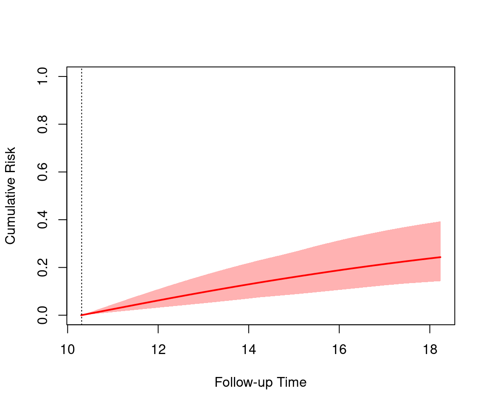

A Dynamic Joint Model (Dynamic JM) is an extension of the standard shared random effects joint model that enables real-time, individualized risk prediction for a future event (e.g., death, disease progression) by updating predictions as new longitudinal data (eg. biomarker measurements) become available. In other words, it turns the joint model into a dynamic prediction tool, not just a static association estimator.
At any time point \(t\) during follow-up, after observing a patient’s longitudinal history \(\mathcal{Y}_i(t) = \{ y_i(s) : 0 \leq s \leq t \}\), we can compute the conditional probability of surviving beyond a future time \(u > t\)**:
This probability dynamically updates as \(t\) increases and more biomarker data are collected.
Why “Dynamic”?
Static models (e.g., baseline Cox) give one risk estimate at enrollment.
Time-dependent Cox uses observed biomarker values but ignores measurement error and trajectory.
Dynamic JM uses the entire history of noisy measurements to infer the true underlying trajectory (via the mixed model) and propagates uncertainty into the survival prediction.
Mathematical Foundation
Under the standard joint model with current-value association, the dynamic survival probability is:
Landmarking + JM: Hybrid approaches for robustness
Deep joint models: Using RNNs or GPs for nonlinear trajectories (research frontier)
Dynamic Joint Model in R
This tutorial explains how to fit, analyze, and interpret a Dynamic Joint Model — that is, a joint model where the association between a longitudinal biomarker and survival outcome changes over time.
Install Required R Packages
Following R packages are required to run this notebook. If any of these packages are not installed, you can install them using the code below:
Here, the association parameter Assoct (α) represents how CD4 level affects death risk.
Fit a Dynamic Joint Model (Time-Varying Association)
Now we allow the association parameter α(t) to vary with time.
This can be done by specifying a time-varying functional form using B-splines:
Code
# Dynamic (time-varying) association joint modeljmFit_dynamic <-jm(CoxFit, lmeFit, time_var ="obstime",# Functional form for time-varying associationfunctional_forms =~value(CD4, form ="splines"))summary(jmFit_dynamic)
In the standard JM, α is constant → one global effect of CD4 on survival.
In the dynamic JM, α(t) is modeled as a smooth spline → it can change over follow-up time.
Dynamic (Real-Time) Predictions
Once fitted, you can make personalized survival predictions that update as new data arrives.
Example for a specific patient:
Code
# Select one patient’s datapatientData <- aids[aids$patient =="100", ]# Predict survival probability beyond 10 years, given data up to time = 5pred_dynamic <-predict(object = jmFit_dynamic,newdata = patientData,process ="event",Times =seq(5, 10, by =0.5), # times at which to predict survivalreturn_newdata =TRUE)
You can visualize the predicted survival curves:
Code
plot(pred_dynamic)

This curve updates as the patient’s CD4 history is extended — illustrating dynamic (real-time) prediction.
Dynamic predictive accuracy
Using the available longitudinal information up to a starting time point, tvROV fuctions compute estimates of the ROC curve and the AUC, the Brier score and expected predictive cross-entropy at a horizon time point based on joint models.
Time-dependent AUC for the Joint Model jmFit_static
Estimated AUC: 0.739
At time: 8
Using information up to time: 5 (414 subjects still at risk)
Accounting for censoring using model-based weights
Updated survival probability using recent biomarker history
Personalized forecasts
Summary and Conclusion
The Dynamic Joint Model extends the standard joint modeling framework by allowing the association between longitudinal biomarkers and survival risk to vary over time. This flexibility enables more accurate and personalized risk predictions that adapt as new biomarker data are collected. This tutorial demonstrated how to fit and interpret a Dynamic Joint Model in R using the JMbayes2 package. At the end of tutorial you should be able to:
Understand the concept of dynamic joint modeling and its advantages over standard joint models.
Fit a dynamic joint model with time-varying association using R.
Generate and interpret dynamic survival predictions that update with new longitudinal data.
Evaluate the predictive accuracy of dynamic joint models using time-dependent ROC curves and AUC.
Appreciate the clinical utility of dynamic joint models for personalized medicine.
Resources
Rizopoulos D. (2012). Joint Models for Longitudinal and Time-to-Event Data. Chapman & Hall/CRC.
Rizopoulos D. (2023). JMbayes2: Joint Models for Longitudinal and Survival Data using Bayesian Methods.